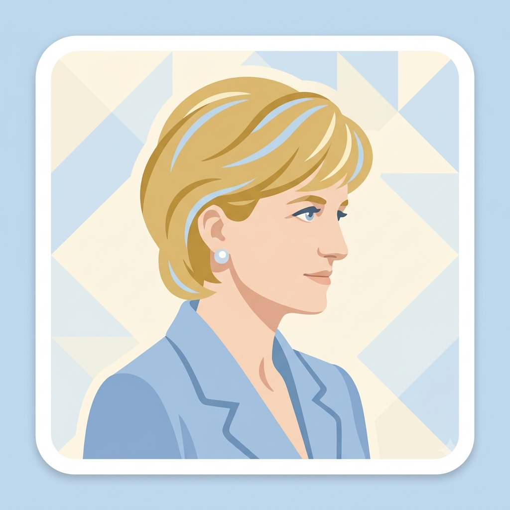

Principais Feitos e Legado
Por Joice
biografia
Nasceu em Sandringham, no Reino Unido, em 1 de julho de 1961, com o nome de Diana Frances Spencer.Cresceu em uma família nobre e aristocrática, sendo a filha mais nova de Edward John Spencer.Seus pais se divorciaram quando ela tinha oito anos de idade.Tornou-se Lady Diana Spencer em 1975, após seu pai herdar o título de conde.
Casamento e RealezaCasou-se com o príncipe Charles em 29 de julho de 1981, na Catedral de São Paulo, em Londres.O casal teve dois filhos: o príncipe William e o príncipe Harry.O casamento enfrentou graves crises públicas devido a incompatibilidades e infidelidades.O divórcio oficial do casal foi finalizado em 1996
Por Joice